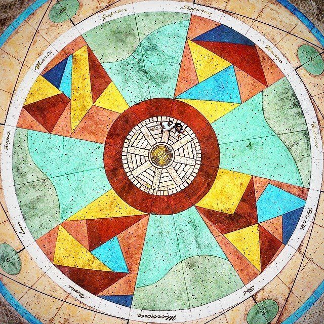

O Marco Zero é um dos pontos turísticos mais emblemáticos da cidade do Recife, localizada na região nordeste do Brasil. Este marco é o ponto de referência geográfica de onde se medem as distâncias em Recife, e também é um importante símbolo cultural da cidade.

O Marco Zero está localizado na Praça Rio Branco, no bairro do Recife Antigo, e é um local de grande importância histórica. Além de servir como referência para medir distâncias, o local abriga inúmeras atrações turísticas, restaurantes, bares e lojas de artesanato.
Uma das principais atrações do Marco Zero é a Rosa dos Ventos, um grande painel circular no chão que representa os pontos cardeais e é decorado com azulejos portugueses. É um local muito visitado por turistas e também utilizado para eventos culturais e shows.